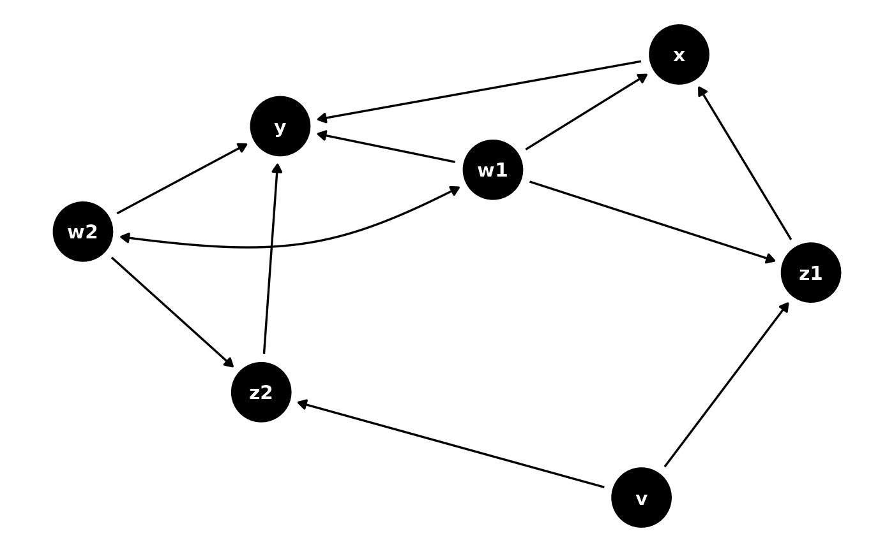

Directed and bidirected DAG edges
Usage
geom_dag_edges(
mapping = NULL,
data_directed = filter_direction("->"),
data_bidirected = filter_direction("<->"),
curvature = 0.3,
arrow_directed = grid::arrow(length = grid::unit(5, "pt"), type = "closed"),
arrow_bidirected = grid::arrow(length = grid::unit(5, "pt"), ends = "both", type =
"closed"),
position = "identity",
na.rm = TRUE,
show.legend = NA,
inherit.aes = TRUE,
fold = FALSE,
...
)Arguments
- mapping
Set of aesthetic mappings created by aes() or aes_(). If specified and inherit.aes = TRUE (the default), it is combined with the default mapping at the top level of the plot. You must supply mapping if there is no plot mapping.
- data_directed, data_bidirected
The data to be displayed in this layer. There are three options: If NULL, the default, the data is inherited from the plot data as specified in the call to ggplot(). A data.frame, or other object, will override the plot data. All objects will be fortified to produce a data frame. See fortify() for which variables will be created. A function will be called with a single argument, the plot data. The return value must be a data.frame., and will be used as the layer data.
- curvature
The bend of the curve. 1 approximates a halfcircle while 0 will give a straight line. Negative number will change the direction of the curve. Only used if layout circular = FALSE.
- arrow_directed, arrow_bidirected
specification for arrow heads, as created by arrow()
- position
Position adjustment, either as a string, or the result of a call to a position adjustment function.
- na.rm
If FALSE (the default), removes missing values with a warning. If TRUE silently removes missing values
- show.legend
logical. Should this layer be included in the legends? NA, the default, includes if any aesthetics are mapped. FALSE never includes, and TRUE always includes. It can also be a named logical vector to finely select the aesthetics to display.
- inherit.aes
If FALSE, overrides the default aesthetics, rather than combining with them. This is most useful for helper functions that define both data and aesthetics and shouldn't inherit behaviour from the default plot specification, e.g. borders().
- fold
Logical. Should arcs appear on the same side of the nodes despite different directions. Default to FALSE.
- ...
Other arguments passed to ggraph::geom_edge_*()
Aesthetics
geom_dag_edges understand the following aesthetics. Bold aesthetics are
required.
x
y
xend
yend
edge_colour
edge_width
edge_linetype
edge_alpha
start_cap
end_cap
label
label_pos
label_size
angle
hjust
vjust
family
fontface
lineheight
geom_dag_edges also uses geom_dag_edges_arc, which requires the
circular aesthetic, but this is automatically set.
Examples
library(ggplot2)
dagify(
y ~ x + z2 + w2 + w1,
x ~ z1 + w1,
z1 ~ w1 + v,
z2 ~ w2 + v,
w1 ~ ~w2
) %>%
ggplot(aes(x = x, y = y, xend = xend, yend = yend)) +
geom_dag_edges() +
geom_dag_point() +
geom_dag_text() +
theme_dag()
